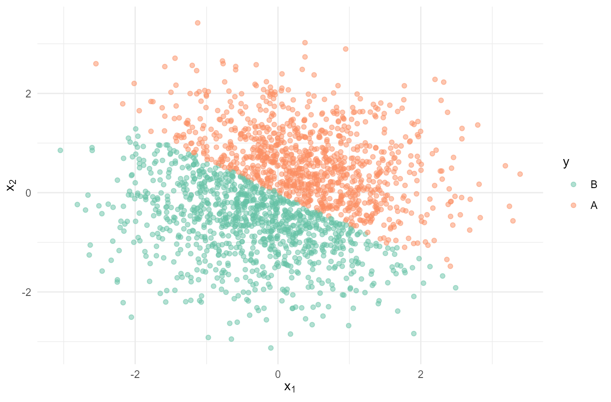

library(tidyverse)
theme_set(theme_minimal())
knitr::opts_chunk$set(
out.width = "80%",
fig.align = "center",
dev = "ragg_png"
)动手实现感知机模型
1 PLA
生成线性可分的数据
set.seed(123)
n = 2000
df <- tibble(
id = 1:n,
x1 = rnorm(n),
x2 = rnorm(n),
y = if_else(2*x1 + 3*x2 >= 0, "A", "B")
) %>%
arrange(id)
df# A tibble: 2,000 × 4
id x1 x2 y
<int> <dbl> <dbl> <chr>
1 1 -0.560 -0.512 B
2 2 -0.230 0.237 A
3 3 1.56 -0.542 A
4 4 0.0705 1.22 A
5 5 0.129 0.174 A
6 6 1.72 -0.615 A
7 7 0.461 -1.81 B
8 8 -1.27 -0.644 B
9 9 -0.687 2.05 A
10 10 -0.446 -0.561 B
# ℹ 1,990 more rowsdf %>%
ggplot(aes(x1, x2, color = as_factor(y))) +
geom_point(alpha = 0.5) +
labs(
x = latex2exp::TeX("$x_1$"),
y = latex2exp::TeX("$x_2$"),
color = "y"
) +
scale_color_brewer(palette = "Set2")
ml_pla <- function(data, formula, max_time, W = 1) {
time <- 0 # 记录运行了几次
model_frame <- model.frame(formula, data)
# 查看Y的分类
Y_class <- model.response(model_frame) %>%
unique()
Y_class_to_number <- c(1, -1)
names(Y_class_to_number) <- Y_class
X_matrix <- model.matrix(formula, model_frame)
X_ncol <- ncol(X_matrix)
W <- rep(W, X_ncol)
n_errors <- 11111 # 设置一个初始的错误数量，触发下面的条件
log_errors <- c() # 记录错误数量
while (n_errors > 0 && time < max_time) {
# 生成Y的预测值
Y_pred <- if_else(sign(X_matrix %*% W) == 1,
Y_class[[1]],
Y_class[[2]]
)
# 筛选出分类不正确的数据
errors_dt <- model_frame[Y_pred != model_frame[, 1], ]
n_errors <- nrow(errors_dt)
log_errors <- c(log_errors, n_errors) # 记录错误的数据有多少
time <- time + 1
# 有错误就更新W
if (n_errors > 0) {
# 随机选出一个错误的点
errors_sample_id <- rownames(errors_dt) %>%
sample(size = 1)
x <- X_matrix[errors_sample_id, ]
y <- model_frame[errors_sample_id, 1] %>%
as.character() %>%
Y_class_to_number[.]
# 更新W
W <- W + y * x
}
}
return(list(
pred = Y_pred,
"W" = W,
time = time,
log_errors = log_errors
))
}看一下效果
pla <- ml_pla(df, y ~ x1 + x2, max_time = 10000)
str(pla)List of 4
$ pred : chr [1:2000] "B" "A" "A" "A" ...
$ W : Named num [1:3] 0 -26.1 -39.2
..- attr(*, "names")= chr [1:3] "(Intercept)" "x1" "x2"
$ time : num 1736
$ log_errors: int [1:1736] 1442 1428 1199 364 449 98 429 368 482 243 ...df %>%
bind_cols(pred = pla$pred) %>%
filter(y != pred)# A tibble: 0 × 5
# ℹ 5 variables: id <int>, x1 <dbl>, x2 <dbl>, y <chr>, pred <chr>